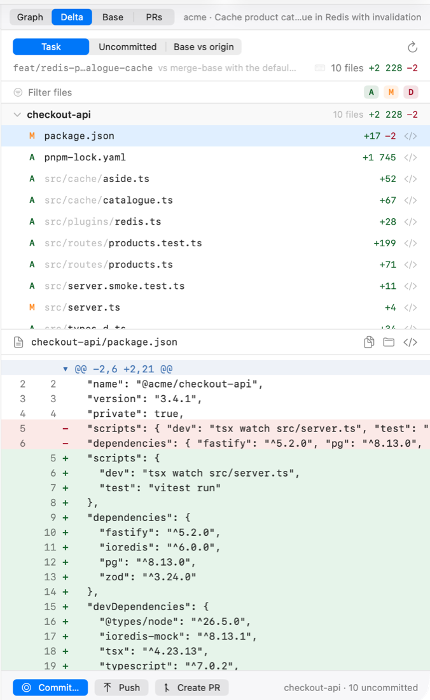
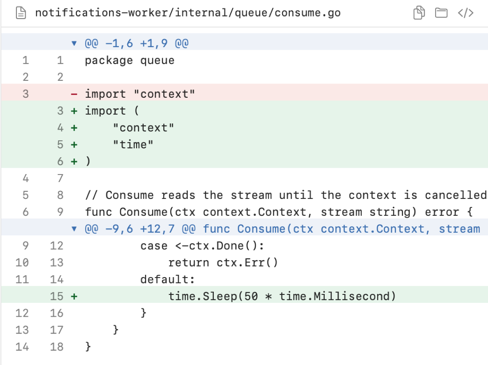
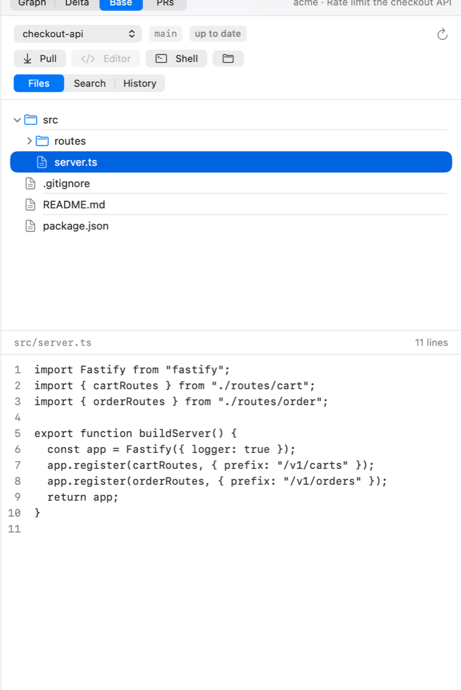
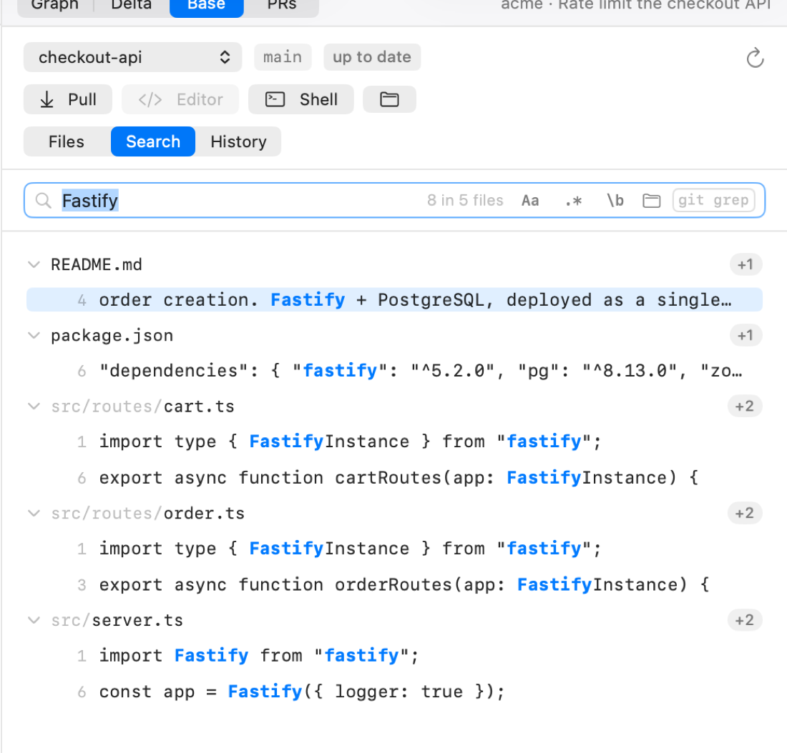

Delta, Base, pull requests
Everything you would otherwise leave the app for: what changed, what it changed from, and where it is going.

Delta
⌘D. Three modes over the same selection:
| Mode | Compares |
|---|---|
| Task | the task branch against its merge-base with the default branch — the whole change |
| Uncommitted | the working tree against HEAD — what the agent has not committed yet |
| Base vs origin | the local branch against its remote — what is not pushed |

Files are grouped by repository, with an add/modify/delete filter, a fuzzy filter field and per-file line counts. j/k move between files, [/] between hunks.
The diff

Native text: selectable, searchable with ⌘F, with both line numbers, and a copy / reveal / open-in-editor row for the file.
Commit, push, open the PR
The footer of the panel carries the three actions, per repository, with the state next to them
(10 uncommitted, clean, 3 ahead). Create PR shells out to gh and links
the resulting pull request to the task, so the PRs tab keeps showing it.
Base
⇧⌘B. The repository as it is on disk, outside any sandbox — the reference the agent is working from.

- Files — a tree and a read-only viewer with line numbers.
- Search —
git grepacross the checkout, with case, regex, whole-word and folder filters. - History — recent commits of the branch.

Pull is fast-forward only and refuses on a dirty tree. Shell opens a thread rooted at the base checkout — useful when you want to run something against the real branch rather than a sandbox.
Pull requests
⇧⌘P. Open pull requests of the selected repository, through the gh CLI and your
existing GitHub authentication: title, number, author, branch, checks and review state. Open one in the
browser, or turn it into a task whose sandbox sits on the PR's head.
The panel needs gh auth login and a GitHub remote. A repository without one
simply shows nothing to list.